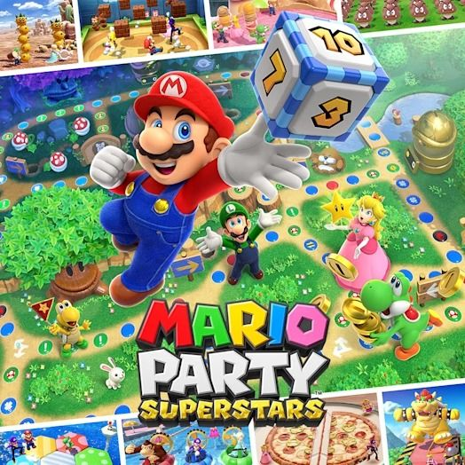
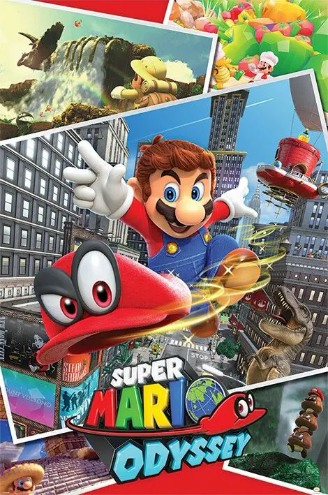
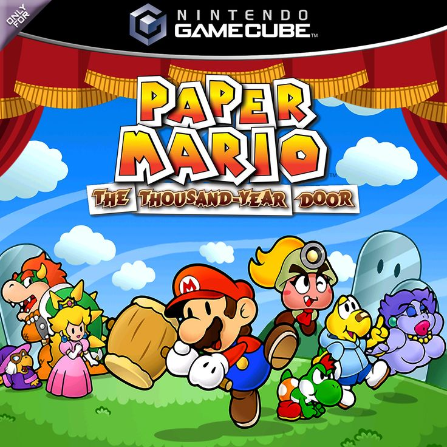

| NOME | DESCRIÇÃO | IMAGEM |
| Mario Kart 8 Deluxe | É um jogo de corrida estilo arcade, onde o foco é a diversão e o caos causado por itens clássicos como cascos vermelhos e bananas. Uma ótima opção para jogar com os amigos. |  |
| Mario Party Superstars | Ele funciona como um jogo de tabuleiro virtual onde o objetivo é avançar pelas casas, sabotar os outros competidores e juntar o maior número de moedas e estrelas. Bom para aproveitar um tempo com a família. |  |
| Super Mario Odyssey | É um jogo de plataforma focado na exploração de mundos abertos massivos, criativos e cheios de segredos. O objetivo é viajar em uma nave movida a luas (a Odyssey) para salvar a Princesa Peach de mais um casamento forçado com o Bowser. |  |
| Paper Mario: The Thousand-Year Door | Mistura o universo de Mario com um mundo feito de papel e dobraduras, focado em uma história cheia de humor e mistério na cidade de Rogueport. As batalhas por turnos acontecem diante de uma plateia ativa, que joga itens ou te vaia dependendo da sua performance. |  |